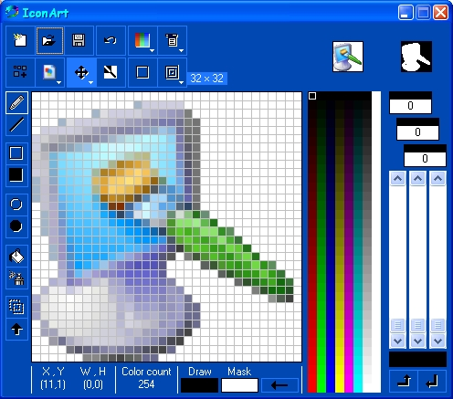

23 Jan 2004
23 Jan 2004
First Posted
 Reading and Saving .ICO files and resources in VB
Reading and Saving .ICO files and resources in VB

IconArt
Simple Icon Editing
IconArt is a highly-compact cursor and icon creator. IconArt allows you to either draw the image from scratch using a variety of common drawing tools or to import an image to turn into an icon or cursor. IconArt has recorded well over 100,000 downloads since launch and has been published with various computer magazines.
IconArt Features
The latest version of IconArt has an easy-to-use layout with Microsoft Paint style tools, and supports gradient fills, text, rotation, transformations and flips, numerous colour palette options and full support for animated and static cursors. It is available both as a free version for personal and educational use and as a Pro version at a very reasonable cost.
Using vbAccelerator Code
IconArt uses the vbAccelerator cFileIcon class to read and write icon files as well as allowing editing of multiple device images in the same file.
About ConWare
IconArt and the ConWare site can be found at